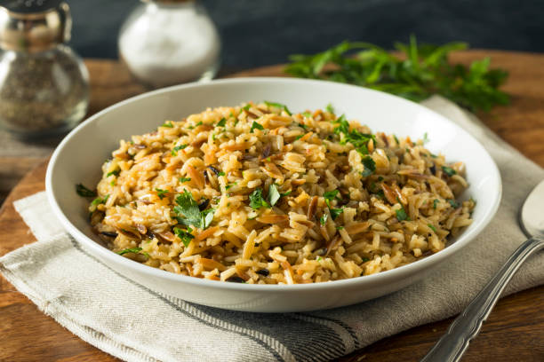

Pilaf

Description
This rice pilaf is a delicious twist on the usual side dish.
Ingredients
- 2 tablespoons butter
- ½ cup orzo pasta
- ½ cup diced onion
- 2 cloves garlic, minced
- ½ cup uncooked white rice
- 2 cups chicken broth
Steps
- Gather all ingredients.
- Melt butter in a skillet over medium-low heat. Add orzo; cook and stir until orzo is golden brown.
- Stir in onion and cook until onion becomes translucent.
- Add garlic and cook for 1 minute. Stir in rice and chicken broth, turn heat to high, and bring to a boil.
- Reduce heat to medium-low, cover the skillet, and simmer until rice is tender and liquid has been absorbed, 20 to 25 minutes.
- Remove from the heat and let stand, covered, for 5 minutes. Fluff with a fork before serving.
- Serve and enjoy!